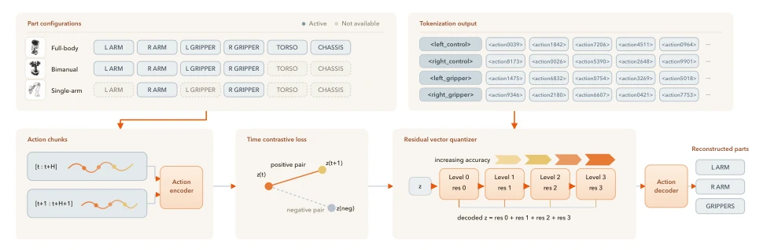
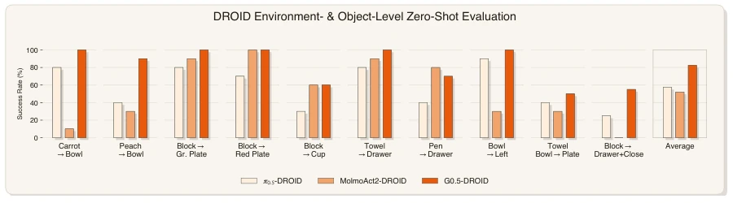
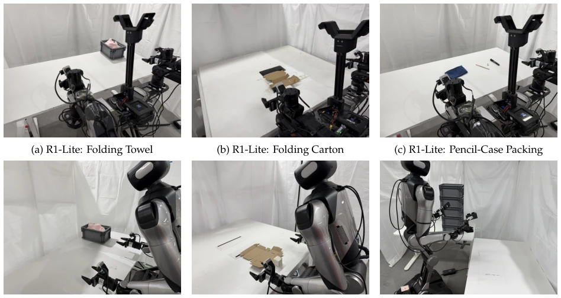
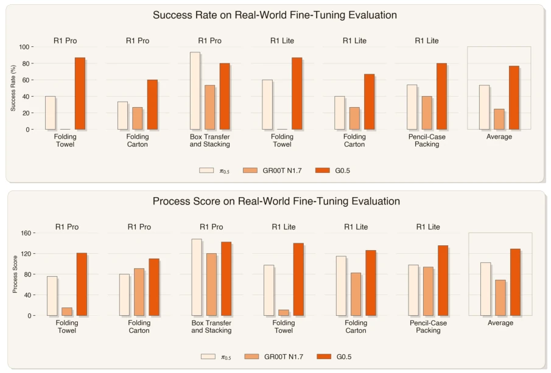
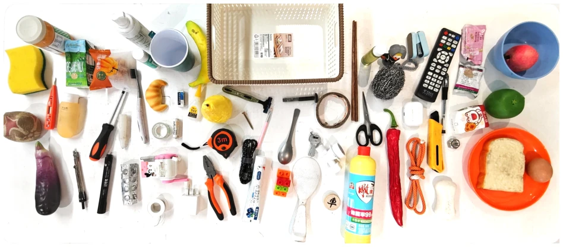
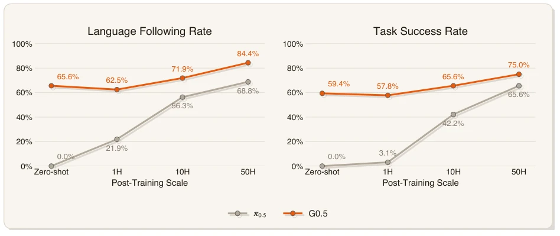
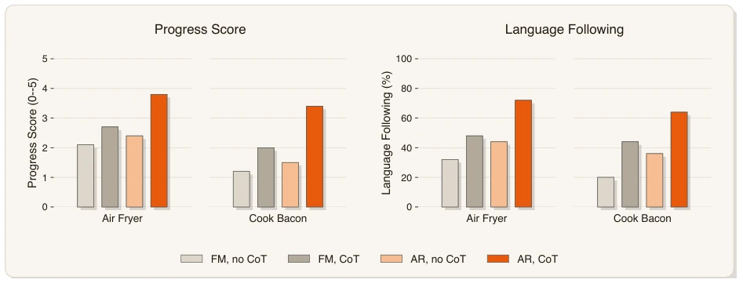

Figure 1: G0.5: reasoning and action in one autoregressive stream. Top left: A single VLM conditions on multi-view images, an instruction, proprioception, and an embodiment identifier, then generates optional chain-of-thought (CoT) and compact action codes under the same next-token objective. A cross-embodiment ActionCodec converts the codes into continuous motor commands, while active-part tokenization omits inactive control groups. Top right: Comparisons with flow-matching policies span generalist pretraining and specialist post-training, covering optimization, compatibility with reinforcement learning, transfer after DROID post-training to a held-out physical setup and previously unseen object instances, and inference latency. Bottom: A closed-loop rollout of open the drawer →pour the w
Figure 2: Token sequence template. All inputs and outputs are serialised into a single autoregressive sequence: a conditioning segment (multi-view RGB, embodiment id, task instruction, proprioceptive state—in user-side chat tokens) and a generative segment on which the next-token cross-entropy loss in Eq. (1) is applied. The generative segment composes an optional chain-of-thought span—any subset of four self-describing reasoning targets (Subtask:, BBox:, Trace:, ActionHint:)—followed by the action codes, which themselves expand into 𝑅residual rounds of DoF-group markers each followed by 8 action codes (Sec. 3.1). 4

Figure 3: Structured action tokenization. Heterogeneous robot actions are decomposed into semantically aligned motion parts, encoded with a residual vector quantizer, and serialized as part-specific action tokens. This representation shares one action vocabulary across embodiments while allowing sparse prediction over only the activated parts.
Figure 5: DROID environment- and object-level zero-shot evaluation tasks. After DROID post-training, we evaluate G0.5 on 10 manipulation tasks across 8 held-out scene setups and previously unseen physical object instances on a Franka Research 3 robot arm. Tasks cover object placement, color-conditioned target selection, small-aperture insertion, deformable object manipulation, spatial displacement, and multi-step sequential execution.

Figure 6: DROID environment- and object-level zero-shot evaluation results. All models are trained on DROID data, while the physical evaluation environment and object instances are held out. Per-task success rates (%) are reported for 𝜋0.5-DROID, MolmoAct2-DROID, and G0.5 across 10 manipulation tasks. G0.5 achieves an average of 82.5%, outperforming 𝜋0.5-DROID (57.5%) by 25.0 percentage points and MolmoAct2-DROID (52.0%) by 30.5 percentage points.

Figure 7: Overview of real-world fine-tuning evaluation settings. We evaluate four manipulation tasks instantiated as six task-embodiment settings across R1-Pro and R1-Lite. The R1-Pro settings include towel folding, carton folding, and box transfer and stacking, while the R1-Lite settings include towel folding, carton folding, and pencil-case packing. Towel folding and carton folding are shared across both embodiments, enabling cross-embodiment comparison under the same task objectives.

Figure 8: Performance on real-world fine-tuning evaluation. We evaluate G0.5 against 𝜋0.5 and GR00T-N1.7 on four manipulation tasks instantiated as six task-embodiment settings across R1-Pro and R1-Lite. G0.5 achieves strong overall performance in both task success rate and process score, demonstrating robust long-horizon manipulation capability across different embodiments.

Figure 9: Pick-and-Place Benchmark setting. The evaluation set contains 64 object categories and 3 container categories. Each trial presents 16 randomly arranged objects and containers, requiring the robot to identify the instructed target among distractors and place it into the specified container. Each policy is evaluated across all object categories in real-world trials to reduce variance.

Figure 10: PP Bench evaluation results. Left: language following rate. Right: task success rate. We compare G0.5 and 𝜋0.5 across zero-shot, 1H, 10H, and 50H post-training settings.

Figure 11: Long-horizon zero-shot probe on Air Fryer and Cook Bacon (same pretrained G0.5 checkpoint with only inference-time switching). Progress score (0–5, number of completed sub-stages) and language-following rate across the four decoder × CoT cells: both metrics show the same ordering, with AR+CoT clearly leading on each task.